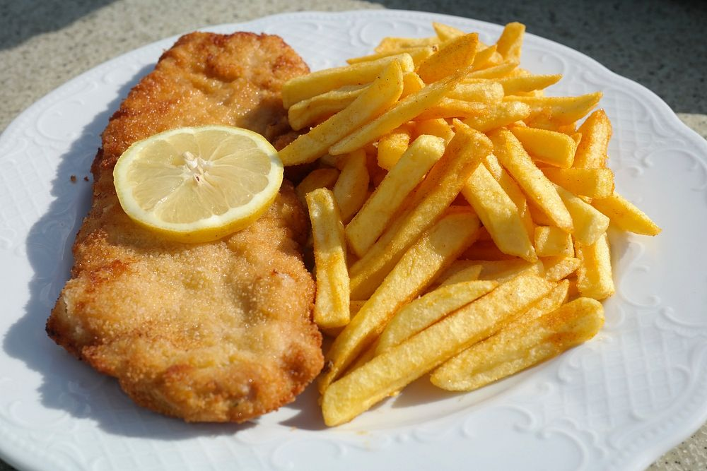

Fish n' Chips

Descriptives yeah
so look here yeah, dis' is chust a regular scran yeah, simpol' fish and chips, you get me?
Ingriidiants yeah
- doesn't mat'er wot kind of fish, just get some, yeah?
- just chips innit, cut potet'o in slices and fry em', yeah?
- Wot else do ya slagging need, it's bloody simple lad.
- O'right, maybe add some kechup or bloody mayo to make things nicer, fookin 'ell
Instructives bruv
- O'right love, it seems you still haven't got the memo, it's just fish n' chips lad, but i'll give it a go
- you just dunk the fish into a pan with oil to fry it, you still with me?
- then you fry the lovely chips in a bloody deep frier, let them cook for a bit
- then when you they're done, you just serve it dandily on a platter for the lucky bloke to scran, a cheeky scran at that
- So now you know, so get on your bike son, and do one
HOME